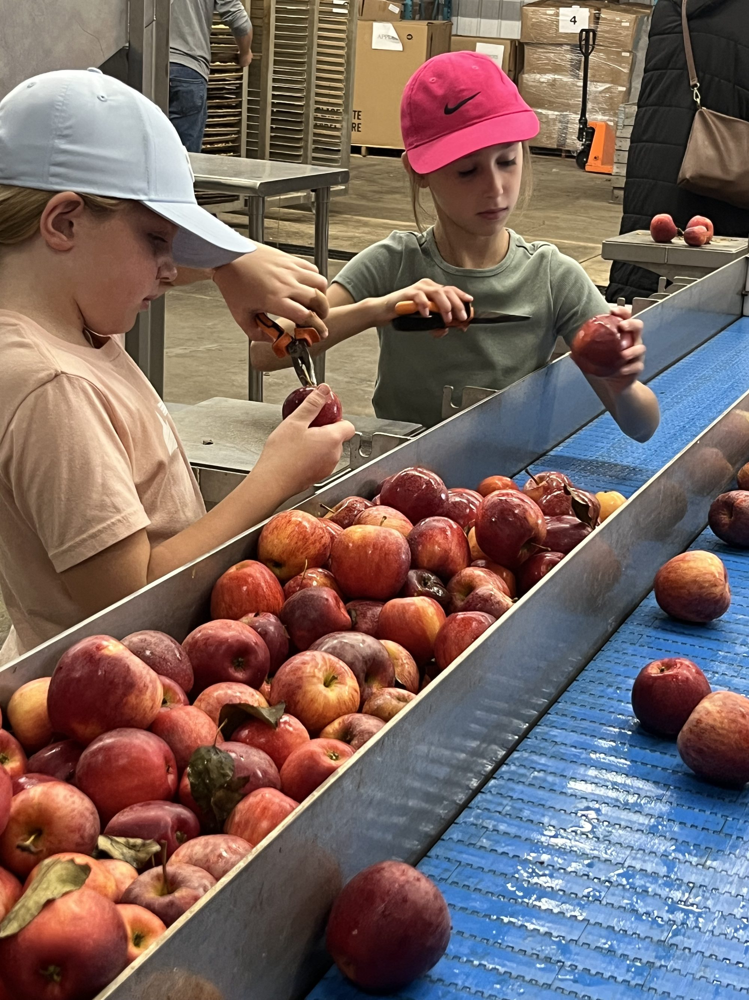
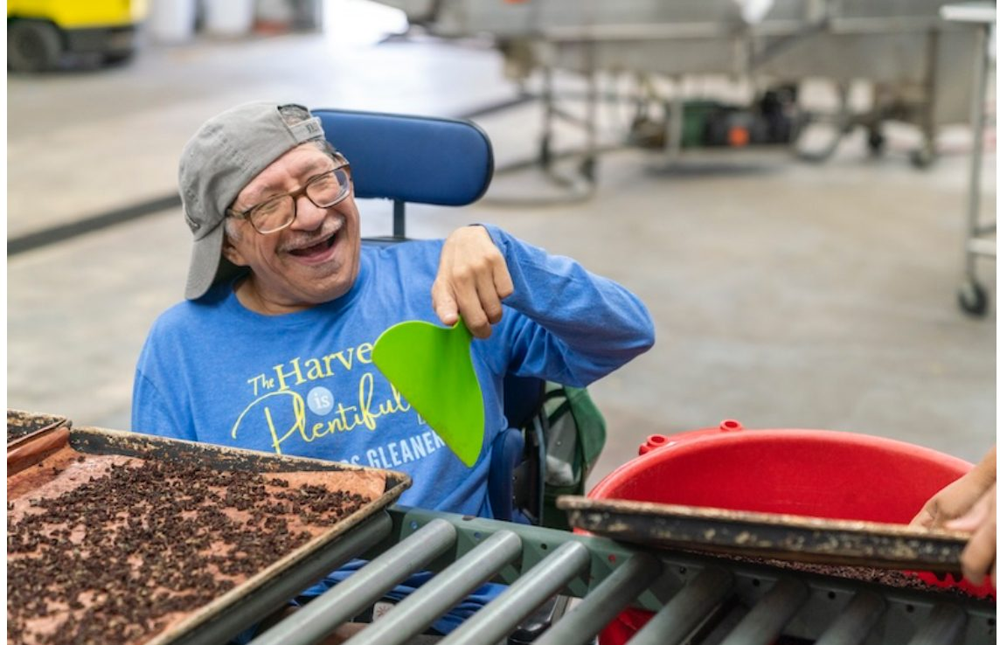
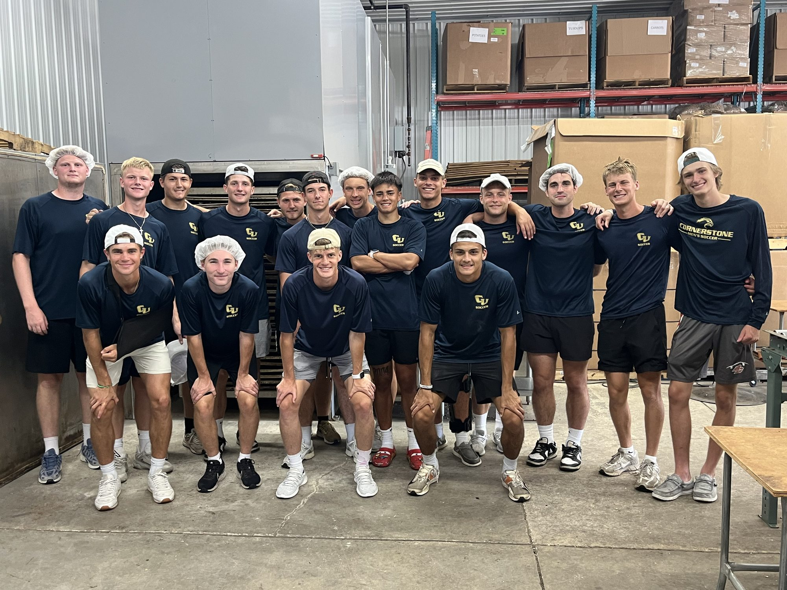

The volunteer experience
Welcoming all generations and abilities
We make room for individuals of all ages, from young children to seniors, and of all abilities, serving shoulder to shoulder. Individuals, families, and groups are welcome.
Shifts are posted on SignUpGenius. Reserve a time that works for you.



Group sign-ups

The warehouse accommodates individuals, families, and groups. Churches, businesses, and school groups can reserve a shift together and serve side by side.
For commercial growers and agricultural partners
Prevent produce loss by turning excess yields, surplus crops, and unharvested acreage into shelf-stable nutrition.
-
Root vegetables
Carrots, potatoes, sweet potatoes, turnips, beets, parsnips, and celery root.
-
Brassicas and greens
Broccoli, cauliflower, and asparagus.
-
Sturdy crops
Cabbage, butternut and acorn squash, celery, bell peppers, and green beans.
-
Fruits
Apples, pears, berries, mangoes, plums, and peaches.
Getting produce to Jenison
- Drop off at the loading dock: 2464 Wilshere Dr, Jenison, MI 49428.
- Or ask us to pick up large bulk bins from the farm.
- Agricultural donations are tax-deductible to the extent permitted by law.
Crop donation intake
This form opens your email app, addressed to director@smgleaners.org.
Warehouse wishlist
We dream big.
- Commercial upright refrigerators (2)
- File-box-size plastic tubs, used, washed, and reused for food scraps (30)
- 18 x 26 inch baking trays (1 to 500; used condition is perfectly fine)
- AED machine
- External 20-foot refrigeration unit for food pallets
- 16-foot-tall, 9-foot teardrop pallet-racking beams
- Boom lift or scissor lift
- 16-foot box truck
- Commercial upright freezers (2)